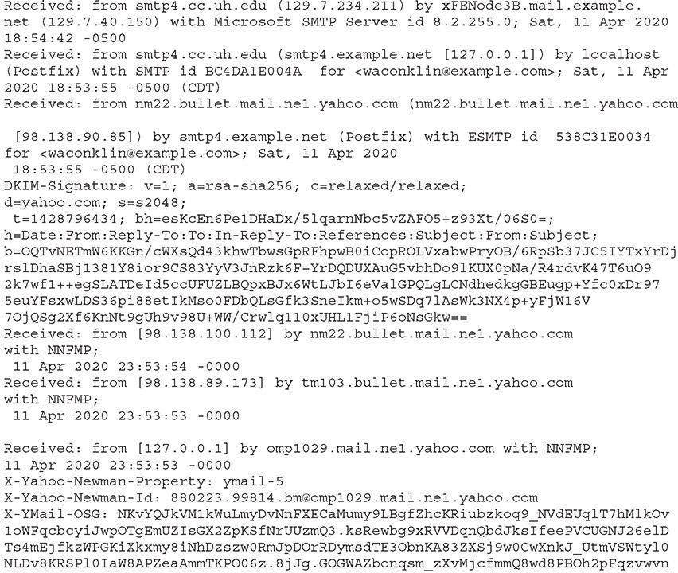
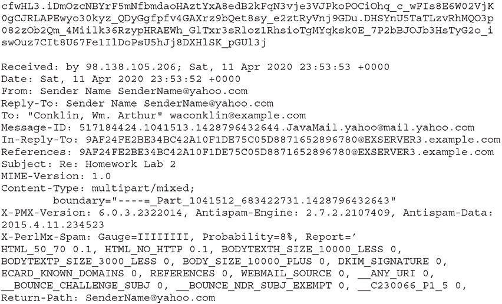

Table of Contents for
CompTIA Security+ All-in-One Exam Guide, Sixth Edition (Exam SY0-601)), 6th Edition
- Cover (01:09 mins)
- Title Page (01:09 mins)
- Copyright Page (03:27 mins)
- Dedication (01:09 mins)
- About the Authors (04:36 mins)
- Contents (19:33 mins)
- Preface (02:18 mins)
- Acknowledgments (01:09 mins)
- Introduction (12:39 mins)
-
Part I Threats, Attacks, and Vulnerabilities (01:09 mins)
- Chapter 1 Social Engineering Techniques (35:39 mins)
- Chapter 2 Type of Attack Indicators (37:57 mins)
- Chapter 3 Application Attack Indicators (33:21 mins)
- Chapter 4 Network Attack Indicators (39:06 mins)
- Chapter 5 Threat Actors, Vectors, and Intelligence Sources (44:51 mins)
- Chapter 6 Vulnerabilities (31:03 mins)
- Chapter 7 Security Assessments (23:00 mins)
- Chapter 8 Penetration Testing (25:18 mins)
-
Part II Architecture and Design (01:09 mins)
- Chapter 9 Enterprise Security Architecture (26:27 mins)
- Chapter 10 Virtualization and Cloud Security (25:18 mins)
- Chapter 11 Secure Application Development, Deployment, and Automation Concepts (27:36 mins)
- Chapter 12 Authentication and Authorization (33:21 mins)
- Chapter 13 Cybersecurity Resilience (39:06 mins)
- Chapter 14 Embedded and Specialized Systems (41:24 mins)
- Chapter 15 Physical Security Controls (49:27 mins)
- Chapter 16 Cryptographic Concepts (42:33 mins)
-
Part III Implementation (01:09 mins)
- Chapter 17 Secure Protocols (20:42 mins)
- Chapter 18 Host and Application Security (46:00 mins)
- Chapter 19 Secure Network Design (67:51 mins)
- Chapter 20 Wireless Security (25:18 mins)
- Chapter 21 Secure Mobile Solutions (43:42 mins)
- Chapter 22 Implementing Cloud Security (24:09 mins)
- Chapter 23 Identity and Account Management Controls (33:21 mins)
- Chapter 24 Implement Authentication and Authorization (37:57 mins)
- Chapter 25 Public Key Infrastructure (55:12 mins)
- Part IV Operations and Incident Response (01:09 mins)
- Part V Governance, Risk, and Compliance (01:09 mins)
- Part VI Appendixes and Glossary (01:09 mins)
- Glossary (65:33 mins)
- Index (67:51 mins)
CHAPTER 28
Investigations
In this chapter, you will
• Learn about the different sources of information used to support an investigation
• Learn how to incorporate appropriate data sources to support an investigation
Investigations are used to determine what happened, who did what, and what elements of an information system have been affected by some specific event or series of events. The elements that need to be investigated for unauthorized activity and changes include both the data elements in the system and the system itself. There can be a wealth of diagnostic and investigatory data collected as part of an ongoing security operation or developed in response to an incident. This chapter looks at how to utilize these sources of data to support an investigation and shed light on what actually happened to both the system and the data it processed.
Certification Objective This chapter covers CompTIA Security+ exam objective 4.3: Given an incident, utilize appropriate data sources to support an investigation.
Vulnerability Scan Output
Vulnerability scan output provides information as to the systems that are running, any additional services that are listening on the network, and what the known vulnerabilities are against each of these. This information is important in a couple of ways. First, it allows verification that the authorized systems are adequately patched. Systems with vulnerabilities act as entry points for attackers, and ensuring the entry points are closed is important. Second, and even more important, is the identification of additional services. These services may or may not be patched, and they too represent a pathway into a system for an attacker. Having extra services running that are not needed only increases the attack surface area, making it easier for attackers to get into a system. Bottom line: a vulnerability report provides you information on what is visible on your network, authorized or not.
SIEM Dashboards
SIEM (security information and event management) dashboards are the windows into the SIEM datastore, a collection of information that can tell you where attacks are occurring and provide a trail of breadcrumbs to show how the attacker got into the network and moved to where they are now. SIEM systems act as the information repository for information surrounding potential and actual intrusions. During an investigation, the SIEM system can provide a host of information concerning a user, what they have done, and so on. The fundamental purpose of a SIEM system is to provide alerts and relevant information to incident response teams that are investigating incidents. If something happens that initiates an investigation, and the SIEM system has no relevant information, then this suggests that the SIEM and its component elements need better tuning to provide meaningful surveillance of the system for potential problems.

EXAM TIP SIEMs allow you to identify, visualize, and monitor trends via alerts and a dashboard.
Sensor
Sensors are the devices that provide security data into the security datastore. Regardless of where that datastore is housed, the security information is important for investigators. Sensors don’t just happen; they have to be placed in the correct location to collect information. Sensor placement begins with defining collection objectives. A study of where the data flows, where the information of value is in a network, and where adversaries can gain access, coupled with what information you wish to collect, are just some of the factors that go into designing sensor placement. Just as logs can provide a lot of useful information, they also can produce a lot of meaningless data. Sensors are no different. Packet capture sensors can record vital information for an investigation, but they have to be in the correct location (that is, have visibility with respect to the desired packets) while also avoiding common traffic areas where there is a lot of noise. To be properly prepared for future investigations, you need to properly design and place your sensors.
Sensitivity
Sensitivity is the quality of being quick to detect or respond to slight changes, signals, or influences. As the purpose of a SIEM system is to alert operators to changes that indicate significant events, sensitivity to those events is important. The biggest problem with SIEMs and sensitivity is the tradeoff between false positives and false negatives. If you alert on too many possible conditions, you increase false positives and create operator fatigue. Wait for too much data, and you miss some, creating a false negative and an impression that the SIEM system doesn’t work. Adjusting the sensitivity until you have the right balance is a tough but important task.
Trends
Trends are a series of data points that indicate a change over time. Trends can be increasing, decreasing, cyclical, or related to variability. What is important is that trends indicate some form of change. Not all forms of change are relevant to the SIEM system’s mission, and a key element is in understanding which changes are and which aren’t. Some changes are important in a direct fashion, such as failed logins. If the average number of failed logins is 20 per day, and suddenly you are getting 10,000 in an hour, that indicates something has changed. An attacker? A script with an error? It will take some investigation to find. What if those same failures were spread across four users, all system admins? Trends matter, but so does the information behind them. This makes alerting on multiple items with good comprehensive reports more useful than just an alert stating “this number is too high.” Context matters.
Alerts
Alerts are the primary method of communication between the SIEM system and operators. When conditions meet the rule requirements, the SIEM system can send an alert. The more information that can be provided in the alert (other related information, the context of the event, and so on), the better the alert. The key isn’t to tell a security engineer “something happened, go find out what it is,” but rather to steer the engineer in the correct direction with supplemental information that the operator can interpret and then devise a plan to investigate effectively.
Correlation
Correlation is the process of establishing a relationship between two variables. However, as a wise scientist once stated, correlation is not causation, meaning that just because measurements trend together doesn’t mean one causes the other. There is frequently another element at play, some variable not being measured. Think about a series of failed logins coming from an IP address that was also rejected at a firewall for scanning activity. Or how about some access control failures, and activity such as a successful login with a different username from same IP address in a short time period? Or a UDP packet with port 67 as the destination port, but the destination address is not one of your DHCP servers? Correlation is a means for a SIEM system to apply rules to combine data sources to fine-tune event detection.
EXAM TIP SIEM event correlation logs are extremely useful because they can be used to identify malicious activity across a plethora of network devices and programs. This is data that otherwise may go unnoticed.
Log Files
Log files are a primary source of information during an investigation. Software can record in log files a wide range of information as it is operating. From self-health checks, to error-related data, to operational metadata supporting the events that are happening on a system, all this data ends up in log files. These log files act as a historical record of what happened on a system. Log files require configuration because if you don’t log an event when it happens, you can’t go back in time to capture it. By the same token, logging everything creates too much data—data that must be waded through during an investigation. The key is balance: record what you need to know to make determinations—no more, no less.
Network
Networks are filled with equipment that can provide valuable log information. Firewalls, routers, load balancers, and switches can provide a wealth of information as to what is happening on the network. Network logs tend to have a duplication issue as packets can traverse several devices, giving multiple, nearly identical records. Removing duplicate as well as extraneous data is the challenge with network logging, but the payoff can be big because proper logging can make tracing attackers easier.
System
Virtually every operating system creates system logs. These logs can provide a very detailed history of what actions were performed on a system. Login records that indicate failed logins can be important, but so can entries that show login success. Multiple failures followed by a success can be suspicious, especially when the number of failures and timing precludes a human operator typing. What about access permission failures? These can indicate an attempt to perform unauthorized activity. What about access successes? Logging these would swamp the database with a large number of irrelevant records. This is one of the challenges of logging things on a system—which logs produce meaningful answers and which just produce noise? Also, realize that the decision to log has to happen before an event occurs; in other words, you can’t go back and have a do-over if you fail to log a crucial piece of evidence.
Application
Application logs are generated by the applications themselves as they run. Some applications provide extensive logging; others minimal or even no logging. Some applications allow configuration of what is logged; others do not. Many server applications—web servers, mail servers, and database servers—have extensive logging capability, including which user performed which action and when. Other systems merely log when they start and stop operations and may log errors.
Security
Security logs are logs kept by the OS for metadata associated with security operations. In Microsoft Windows, literally hundreds of different events can be configured to write to the Security log—system starting, system shutting down, permission failures, logins, failed logins, changing the system time, a new process creation, scheduled task changes, and more. These logs can be important, but to be important they need to be tuned to collect the information needed. In Windows, this is typically done through group policy objects. The driving force for what needs to be recorded is the system’s audit policy, a statement about what records need to be kept.
EXAM TIP The Windows Event Viewer is used to look at Windows logs. The System log displays information related to the operating system. The Application log provides data related to applications that are run on the system. The Security log provides information regarding the success and failure of attempted logins as well as security-related audit events. Be ready to identify specific log file output on the exam!
Web
Web servers respond to specific, formatted requests for resources with responses, whether in the form of a web page or an error. And all of this activity can be logged. Web servers are specifically deployed to do this task, but they are also targets of attacks—attacks that try to run malicious scripts, perform DDoS attacks, perform injection and cross-site scripting attacks, and more. Web log files can help identify when these activities are occurring.
DNS
DNS logs, when enabled, can contain a record for every query and response. This can be a treasure trove of information for an investigator because it can reveal malware calling out to its command-and-control server, or data transfers to non-company locations. Analysis of DNS logs can show IP addresses and domain names that your systems should be communicating with as well as ones they shouldn’t be communicating with. In cases where an attacker or malware is doing the communication, these communication channels may be next to invisible on the network, but the DNS system, as part of the network architecture, can log the activity. This is one of the reasons why DNS logs are some of the most valuable logs to import into a SIEM system.
Authentication
Authentication logs contain information about successful and failed authentication attempts. The most common source of authentication log information comes from the system’s security logs, but additional sources exist as well. With the expansion of multifactor authentication services, applications that manage second factors also have logs. These logs are important, as they can show anomalies such as proper primary login data but failed second-factor data, indicating that the primary authentication information may have been disclosed.
Dump Files
Dump files are copies of what was in memory at a point in time—typically a point when some failure occurred. Dump files can be created by the operating system (OS) when the OS crashes, and these files can be analyzed to determine the cause of the crash. Dump files can also be created by several utilities and then shipped off to a third party for analysis when an application is not behaving correctly. Dump files can contain a wide range of sensitive information, including passwords, cryptographic keys, and more. Care should be taken when handling dump files, and especially when sharing them for analysis. Several security vendors have tools that assist in the securing of sensitive information in dump files, but the risk of secret disclosure is still present. Because of the size and complexity involved in interpreting dump files, they are not a common investigative tool, except for narrow investigations such as why a system is crashing.
Attackers, on the other hand, love to get dump files and peruse them; therefore, setting systems to not persist dump files is common to prevent hackers from crashing a server and then coming back to get the subsequent dump file.
VoIP and Call Managers
Voice over IP (VoIP) solutions and call manager applications enable a wide range of audio and video communication services over the Internet. These systems can log a variety of data, including call information such as the number called (to and from), time of the call, and duration of the call. These records are called call detail records (CDRs). When combined with video and audio systems using VoIP, these logs can be enhanced with information as to how the information was encoded, including the codecs involved and the resolutions.
Session Initiation Protocol (SIP) Traffic
The Session Initiation Protocol (SIP) is a text-based protocol used for signaling voice, video, and messaging applications over IP. SIP provides information for initiating, maintaining, and terminating real-time sessions. SIP traffic logs are typically in the SIP Common Log Format (CLF), which mimics web server logs and captures the details associated with a communication (such as to and from).
Syslog/Rsyslog/Syslog-ng
Syslog stands for System Logging Protocol and is a standard protocol used in Linux systems to send system log or event messages to a specific server, called a syslog server. Rsyslog is an open source variant of syslog that follows the syslog specifications but also provides additional features such as content-based filtering. Syslog-ng is another open source implementation of the syslog standard. Syslog-ng also extends the original syslog model with elements such as content filtering. A primary advantage of syslog-ng over syslog and rsyslog is that it can tag, classify, and correlate in real time, which can improve SIEM performance. For Linux-based systems, these implementations are the de facto standard for managing log files. As log files are one of the primary artifact sources, investigations make significant use of log files and syslog-captured data to build histories of what actually happened on a system.
EXAM TIP Syslog, rsyslog, and syslog-ng all move data into log files on a log server. Rsyslog and syslog-ng both extend the original syslog standard by adding capabilities such as content filtering, log enrichment, and correlation of data elements into higher-level events.
Journalctl
On Linux systems, the initial daemon that launches the system is called systemd. When systemd creates log files, it does so through the systemd-journald service. Journalctl is the command that is used to view these logs. To see the various command options for journalctl, you should consult the man pages on the system. Here is an example of a journalctl command to view logs for a given system service:
journalctl -u ssh
EXAM TIP Understand the differences between journalctl and syslog. Journalctl is the command to examine logs on a server. Syslog (and the variants rsyslog and syslog-ng) is used to move logs to a log server and sometimes to manipulate the log file entries in transit.
NXLog
NXLog is a multiplatform log management tool designed to assist in the use of log data during investigations. This tool suite is capable of handling syslog-type data as well as other log formats, including Microsoft Windows. It has advanced capabilities to enrich log files through context-based lookups, correlations, and rule-based enrichments. NXLog has connectors to most major applications and can act as a log collector, forwarder, aggregator, and investigative tool for searching through log data. As logs are one of the most used data sources in investigations, tools such as NXLog can enable investigators to identify security issues, policy violations, and operational problems in systems.
Bandwidth Monitors
Bandwidth monitors are utilities designed to measure network bandwidth utilization over time. Bandwidth monitors can provide information as to how much bandwidth is being utilized, by service type, and how much remains. Bandwidth monitors can log this information over time and provide a historical record of network congestion problems, including by type of traffic in quality of service–enforced networks.
Metadata
Metadata is data about data. A file entry on a storage system has the file contents plus metadata, including the filename, creation, access, and update timestamps, size, and more. Microsoft Word files have the document contents and additional fields of associated metadata. JPEGs have the same fields of metadata, including the location of the capture and the device used to create the images. Tons of metadata exist on a system, and in many cases individual elements of metadata need to be correlated with other metadata to determine activities. Take, for example, when a USB is inserted into a system. This creates metadata, but for what user? Separate metadata can tell you who was logged in at that time. Collecting, analyzing, and correlating metadata are all part of almost every investigation.
EXAM TIP Remember that everything digital contains metadata, and correlating metadata is a part of almost every investigation.
E-mail is half metadata, half message. For short messages, the metadata can be larger than the message itself. E-mail metadata is in the header of the e-mail and includes routing information, the sender, receiver, timestamps, subject, and other information associated with the delivery of the message. The header of an e-mail includes information for the handling of the e-mail between mail user agents (MUAs), mail transfer agents (MTAs), and mail delivery agents (MDAs), as well as a host of other details. The entire message is sent via plain ASCII text, with attachments included using Base64 encoding. The e-mail header provides all of the information associated with an e-mail as it moves from sender to receiver. The following is a sample e-mail header:


E-mail header data can be important in investigations because it can show details such as the following:
• From Contains information on where the message comes from (can easily be forged).
• To The receiving end of the e-mail (not necessarily the recipient’s e-mail address).
• Subject Think of this as the “title” or the topic that the sender sets on their e-mail.
• Date This is the date and time when an e-mail is written.
• Return-Path Also known as Reply-To, this field contains the address where the reply to the e-mail will be sent.
• Delivery Date This is the timestamp when an e-mail client receives the e-mail.
• Received This line shows the servers an e-mail has gone through in order to arrive at the recipient’s mailbox. To read it from a chronological point of view, you must start at the bottom (where the e-mail was originally sent from) and read to the top (the final destination of the e-mail).
• DKIM Signature and Domain Key Signature DKIM stands for DomainKeys Identified Mail. Along with the domain key signature, it is part of an e-mail signature identification system.
• Message-ID This is a combination of unique letters and numbers created when the e-mail was first written (also forgeable).
• MIME-version MIME is an Internet standard that extends the format and the functionality of an e-mail. You can attach videos, images, and other files using MIME. Attachments are in Base64.
• Content-type Tells you whether the e-mail is written as plaintext or HTML.
• X-Spam status Tells you the score of an e-mail. If it reaches more than the threshold, the e-mail will be considered spam.
• X-Spam level This level depends on the score of the e-mail’s X-Spam status. For every point it gains, the X-Spam level will show one asterisk.
• Message body The actual message that was sent.
As you can see, an e-mail can be mostly metadata.
Mobile
Mobile devices generate, store, and transmit metadata. Common fields include when a call or text was made, whether it was an incoming or outgoing transmission, the duration of the call or the text message’s length (in characters), and the phone numbers of the senders and recipients. Note that the message or audio signal is not part of the metadata, but how much can you get from the metadata alone? More than meets the eye. For example, numbers can be looked up, providing the identities of senders and receivers (such as a conversation with the doctor’s office, followed by a call from a pharmacy).
Other sources of metadata include things like Wi-Fi access points connected to, GPS data in application logs, whether the device has a camera, and EXIF data (discussed later in the “File” section).
Web
The Web provides a means of moving information between browsers and servers. There are a variety of protocols involved and a variety of sources of metadata. The web pages themselves are full of metadata, and browsers store different metadata covering what pages were accessed and when. Browser metadata is a commonly used source of forensic information, because entries of what and when a browser has accessed data can be important. Did a user go to a specific web page? Did they use a web-based e-mail client, exposing actual e-mail information as well as the fact they used e-mail? How long were they on a site? If a user hits a site that displays an image tagged by one of the security appliances, did they stay on that page or immediately go to a different site? There can be a wealth of user behavior information with respect to web browsing.
File
File metadata comes in two flavors: system and application. The file system uses metadata to keep track of the filename as well as the timestamps associated with last access, creation, and last write. The system metadata will include items needed by the OS, such as ownership information, parent object, permissions, and security descriptors.
Application metadata in a file is part of the file data field and is used by the application. For instance, a Microsoft Word document contains a lot of metadata, including fields for author, company, number of times edited, last print time, and so on. Currently, Word has over 90 fields of metadata that can be used/modified by a user. A JPEG file, on the other hand, has metadata that’s typically expressed in the form of EXIF data. The Exchangeable image file (EXIF) format is a standard that defines the formats of image, audio, and metadata tags used by cameras, phones, and other digital recording devices. Common EXIF metadata can include the following:
• The original filename
• Capture and last edited date and timestamps (with varying precision)
• GPS location coordinates (degrees of latitude and longitude)
• A small thumbnail of the original image
• The author’s name and copyright details
• Compass heading
• Device information, including manufacturer and model
• Capture information, including lens type, focal range, aperture, shutter speed, and flash settings
EXIF data exists to assist applications that use these files and can be modified independently of the file contents.
EXAM TIP Metadata is a very valuable source of information during an investigation. Understanding what type of information and detail are present in each major category is important.
NetFlow/sFlow
NetFlow and sFlow are protocols designed to capture information about packet flows (that is, a sequence of related packets) as they traverse a network. NetFlow is a proprietary standard from Cisco. Flow data is generated by the network devices themselves, including routers and switches. The data that is collected and shipped off to data collectors is a simple set of metadata—source and destination IP addresses, source and destination ports, if any (ICMP, for example, doesn’t use ports), and the protocol. NetFlow does this for all packets, while sFlow (sampled flow) does a statistical sampling. On high-throughput networks, NetFlow can generate large quantities of data—data that requires de-duplication. However, having all that data will catch the rare security event packets. sFlow is more suited for statistical traffic monitoring. Cisco added statistical monitoring to NetFlow on its high-end infrastructure routers to deal with the traffic volumes.
EXAM TIP Both NetFlow and sFlow collect packets from routers and switches. NetFlow data can be useful in intrusion investigations. sFlow is used primarily for traffic management, although it will help with DDoS attacks.
IPFIX
Internet Protocol Flow Information Export (IPFIX) is an IETF protocol that’s the answer to the proprietary Cisco NetFlow standard. IPFIX is based on NetFlow version 9 and is highly configurable using a series of templates. The primary purpose of IPFIX is to provide a central monitoring station with information about the state of the network. IPFIX is a push-based protocol, where the sender sends the reports and receives no response from the receiver.
Protocol Analyzer Output
A protocol analyzer (also known as a packet sniffer, network analyzer, or network sniffer) is a piece of software or an integrated software/hardware system that can capture and decode network traffic. Protocol analyzers have been popular with system administrators and security professionals for decades because they are such versatile and useful tools for a network environment. From a security perspective, protocol analyzers can be used for a number of activities, such as the following:
• Detecting intrusions or undesirable traffic. (An IDS/IPS must have some type of capture and decode capabilities to be able to look for suspicious/malicious traffic.)
• Capturing traffic during incident response or incident handling.
• Looking for evidence of botnets, Trojans, and infected systems.
• Looking for unusual traffic or traffic exceeding certain thresholds.
• Testing encryption between systems or applications.
From a network administration perspective, protocol analyzers can be used for activities such as these:
• Analyzing network problems
• Detecting misconfigured applications or misbehaving applications
• Gathering and reporting network usage and traffic statistics
• Debugging client/server communications
Regardless of the intended use, a protocol analyzer must be able to see network traffic in order to capture and decode it. The output of the protocol analyzer is a human-readable format of the information being passed on the system. This information can provide insights into what exactly is or is not happening. Tools can be used to scan the output for specific items of interest, patterns, specific activities, and other elements of communication that might be of interest.
Chapter Review
In this chapter, you became acquainted with security elements associated with investigations. The chapter opened with a section on vulnerability scan outputs followed by one on SIEM dashboards. In the second section, the subtopics of sensors, sensitivity, trends, alerts, and correlations were covered. The next section covered log files, and the subjects of network, system, application, security, Web, DNS, and authentication were presented. These were followed by dump files, VoIP and call managers, and SIP traffic logs.
The topics of syslog/rsyslog/syslog-ng, journalctl, NXLog, retention, and bandwidth monitors were covered next. The next major section was on metadata, which described the e-mail, mobile, web, and file forms of metadata.
The chapter finished with a section on NetFlow/sFlow, where IPFIX was presented, and then a look at protocol analyzer outputs.
Questions
To help you prepare further for the CompTIA Security+ exam, and to test your level of preparedness, answer the following questions and then check your answers against the correct answers at the end of the chapter.
1. Which can be the most valuable log for finding malware in a system?
A. Network
B. Web
C. DNS
D. IPFIX
2. To best understand which machines are talking to each other, which of the following should be used?
A. DNS logs
B. NetFlow
C. Network logs
D. SIEM alerts
3. To remotely log information using a centralized log server, which of the following protocols should be used?
A. DNS
B. NetFlow
C. Syslog
D. IPFIX
4. IPFIX is used for what?
A. Capturing which machines are in communication with each other
B. Managing mobile messaging solutions
C. Reading syslog files
D. DNS logs
5. Where can you find metadata showing where a picture was taken?
A. EXIF data
B. IPFIX data
C. E-mail metadata
D. SIP CTL
6. Which of these is not associated with syslog files?
A. Journalctl
B. NXLog
C. SIP CTL
D. IPFIX
7. Correlation does what with SIEM data?
A. Determines causes
B. Provides background contextual information
C. Allows rule-based interpretation of data
D. All of the above
8. What is one of the challenges of NetFlow data?
A. Proprietary format
B. Excess data fields
C. Record size
D. Removing duplicate records along a path
9. What tool can be used to read system log data in Linux systems?
A. Any text editor
B. Journalctl
C. Web browser
D. Protocol analyzer
10. Which of the following are issues that need to be determined as part of setting up a SIEM solution? (Choose all that apply.)
A. Sensor placement
B. Log files and relevant fields
C. Desired alert conditions
D. DNS logging
Answers
1. C. DNS logs can see requests to communicate with malware command-and-control (C2) servers.
2. B. NetFlow data describes which machines are talking to which machines.
3. C. Syslog is the protocol used to move log files to remote servers.
4. A. IPFIX works like NetFlow, identifying which machines are communicating with each other.
5. A. EXIF is the metadata associated with image and video files.
6. D. IPFIX is not associated with syslog files.
7. C. Correlation allows different events to be combined to provide greater specificity in determining SIEM-based event detection. Correlation is a means for a SIEM system to apply rules to combine data sources to fine-tune event detection.
8. D. Although NetFlow is a proprietary standard, its format is published. It has a small record size, and data it can be repeated from multiple devices along a packet’s path. Removing the duplicates (records) in a distributed system can be a challenge.
9. B. Journalctl can read system logs on Linux systems.
10. A, B, C, and D. Setting up a SIEM requires many steps, including identification of the data source, alerting conditions, which logs and fields to use, and more.